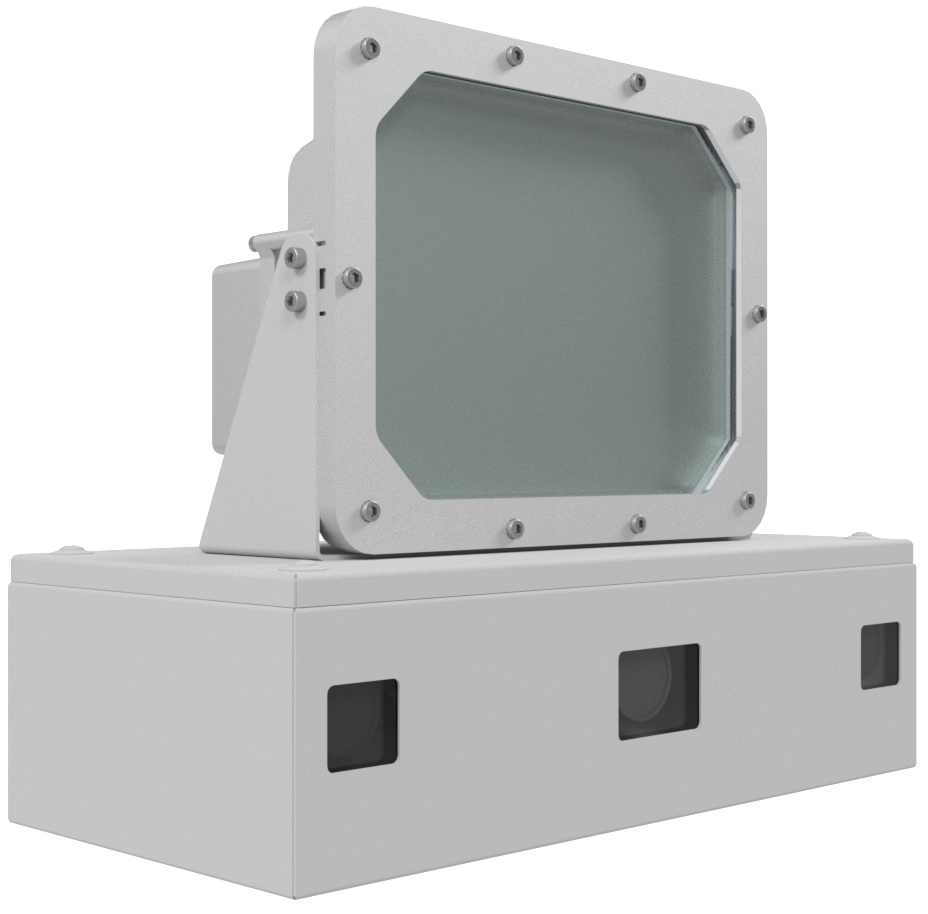
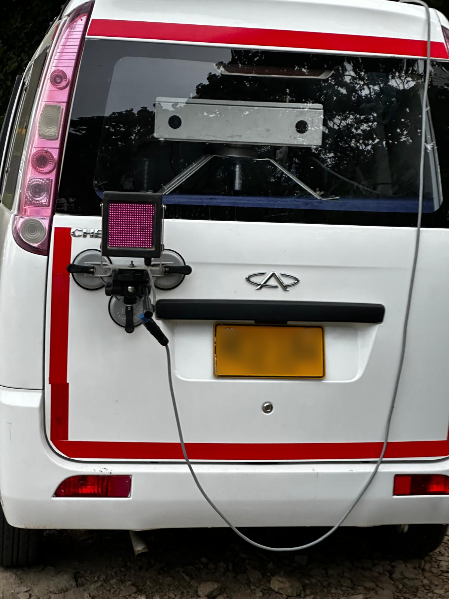
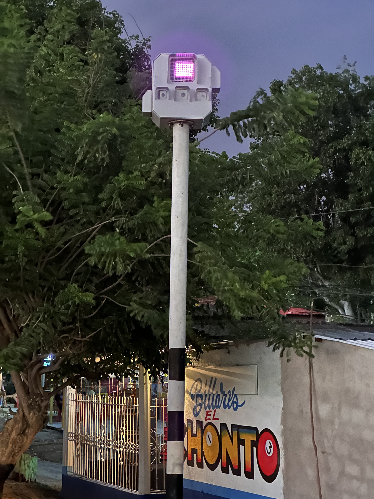
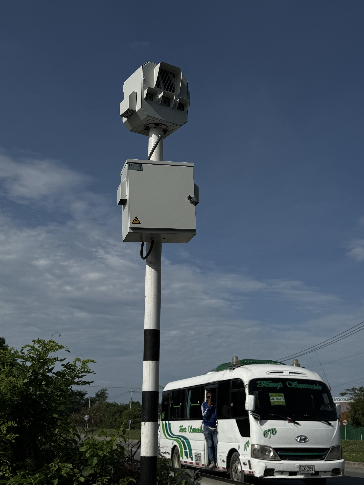
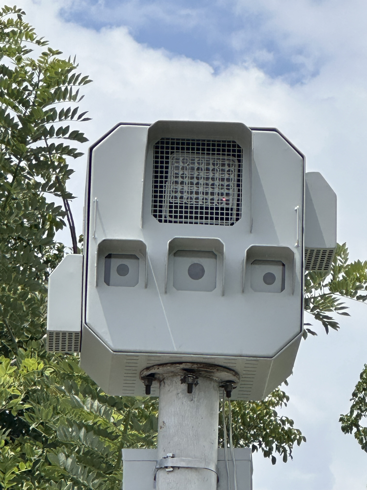
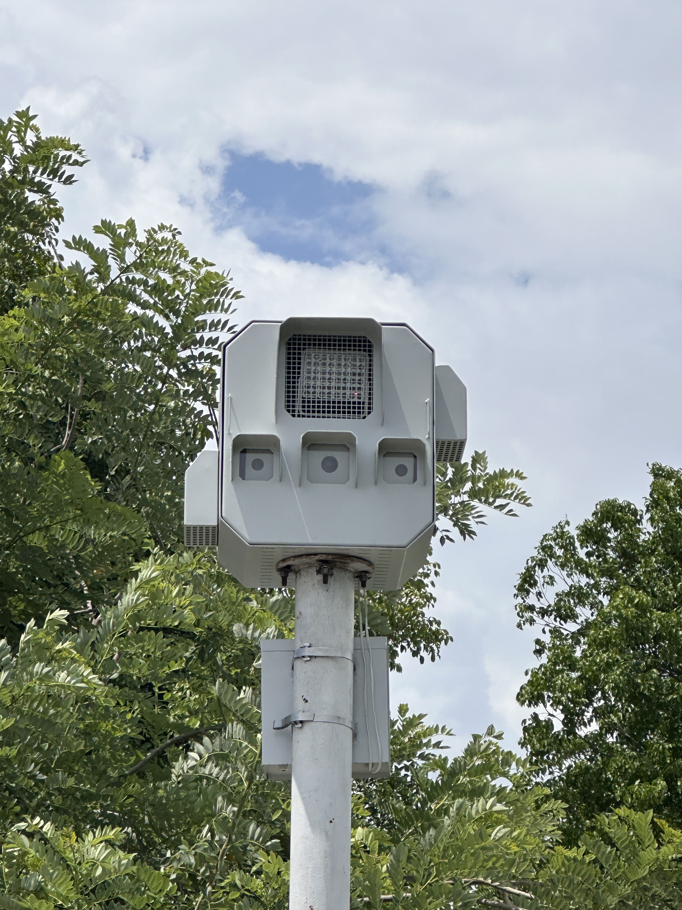

Visión estereoscópica 3D
Dos cámaras simultáneas para percibir profundidad, posición y trayectoria, eliminando limitaciones propias de sistemas planos o radáricos convencionales.
B2G Technology Solutions
De la fotomulta a una seguridad vial inteligente
Tecnología de visión estereoscópica 3D para fiscalización precisa, evidencia verificable, reducción de siniestralidad y fortalecimiento de la gobernanza vial.

Visión estratégica
Flicker Traffic plantea un cambio de paradigma en la gestión del tránsito: pasar de esquemas tradicionales de recaudo a modelos de seguridad vial inteligente, con tecnología robusta, evidencia trazable y soporte técnico local.
Precisión proyectada en medición y soporte técnico para operación en entornos reales.
Tecnología Flicker3D
Dos cámaras simultáneas para percibir profundidad, posición y trayectoria, eliminando limitaciones propias de sistemas planos o radáricos convencionales.
Medición más confiable en rectas, curvas y geometrías complejas, con mayor solidez técnica frente a controversias.
Lectura automática de placas y clasificación vehicular adaptadas al contexto colombiano y a múltiples escenarios de operación.
Captura de foto, video, metadatos y trazabilidad digital para fortalecer el debido proceso y la legitimidad institucional.
Nuestros productos utilizan la única tecnología de cámaras estéreo
de alta velocidad (270 fps) en el mundo para medir con precisión la
velocidad de los vehículos.
Calculamos la disparidad entre las imágenes de la
cámara izquierda y la
cámara derecha tal como lo hacen
los humanos y los animales con sus ojos, pero a una velocidad y precisión mucho mayores.
Esto nos permite
calcular continuamente la posición 3D de los
vehículos que pasan y detectar de manera confiable el exceso de velocidad y otros
tipos de infracciones de tránsito.
Cuando se combina con nuestro software de Detección de Placas y
Clasificación de Vehículos basado en IA, el resultado es una solución integral
para control y sanción.
Soluciones
Medición precisa en corredores, zonas urbanas, rectas y tramos complejos.
Detección y trazabilidad de cruces indebidos en intersecciones controladas.
Diferenciación automática entre motos, livianos, pesados y otras categorías.
Datos para planeación, medición de impacto, comportamiento y gestión institucional.
Gobernanza vial
Enfoque orientado a seguridad vial, trazabilidad de evidencia y cumplimiento técnico dentro del ecosistema SAST y de transporte inteligente.
Diagnóstico, despliegue, integración, soporte técnico, operación y acompañamiento institucional.
Cercanía operativa, conocimiento del contexto colombiano y acompañamiento para proyectos B2G.
Galería real







Nosotros
Flicker Traffic se proyecta como una marca orientada a soluciones B2G en seguridad vial, fiscalización inteligente, evidencia trazable y analítica, con una propuesta visual y tecnológica moderna.
Contacto
Si deseas presentar Flicker Traffic a una entidad territorial, aliado, operador o socio estratégico, esta página ya funciona como base inicial.
Correo: info@flickertraffic.com
Sitio: flickertraffic.com
Ciudad base: Barranquilla, Colombia